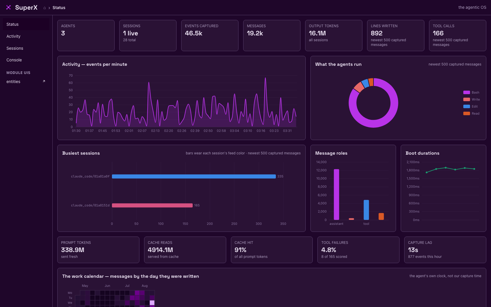
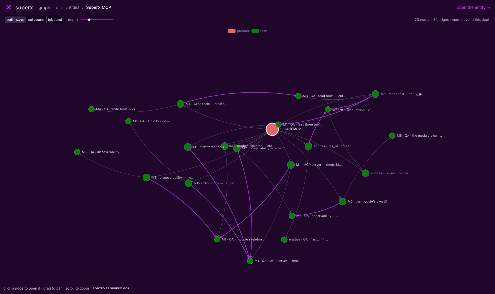
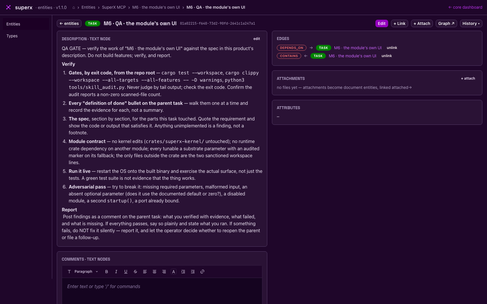

v1.1.0 · Rust + SurrealDB · Apache-2.0
Your coding agents already run all day. SuperX captures every one of them — every message, every tool call, live and historical. Then it puts them to work: model the work as a graph, schedule it, and agents execute it in dependency order while the OS records them doing it. Every change is an insert; nothing is ever overwritten.
$ superx --initialize OS: running in background (pid 1094) UI: http://127.0.0.1:5150 kernel modules: kernel active entities active capture active runner active ui active hello active adapters: claude_code · gemini_cli · claude_desktop OS running in background — capture is live.
The loop
SuperX boots, finds the agents already installed on your
machine — Claude Code, Gemini CLI, Claude Desktop — and reads
their transcripts directly: full conversations, tool calls,
token usage, backfilled history plus a live tail. No agent-side
configuration, no hooks to install, nothing to remember to turn
on. Sessions are identified agent/uuid7 and the
raw transcript line is kept beside every message.
Then the loop closes. You model work as a graph of typed entities — products contain components, tasks carry instructions, tasks consult RAG sources, repos link credentials, documents attach anywhere. The runner schedules the graph: independent tasks dispatch in parallel, dependencies wait their turn, each executed by a spawned agent — whose session SuperX captures on its own dashboard. The OS directs the work and watches itself do it.
See it
Every screenshot on this page is captured from a live SuperX instance — not a mockup. This is the core dashboard: what your agents did, what it cost, and what is happening right now.

Full transcripts from Claude Code, Gemini CLI and Claude Desktop — history backfilled on first contact, then a live tail with cursor checkpoints, so nothing is lost across restarts.
Messages and actions merged in one stream over SSE, grouped by session, searchable back through all of history, each session in its own colour.
Prompt, output and cache tokens per session and per model, cache hit rate, context pressure, and the capture lag — read from the transcripts, not estimated.
Everything the dashboard shows is a command: agents, sessions, read, actions --live, status, logs — and the Console page runs them from the browser.
The product graph
Entities are typed nodes joined by native graph edges: 18 types
seeded and extensible at runtime — product, task, rag, model,
document, text, repo, credential — with contains,
depends_on, consults,
describes, produced and more between
them. Expanding a node costs its degree, never the size of the
history.

contains, purple is depends_on: every
build task paired with the QA task that gates it. Click a node
to re-root, drag to pan, scroll to zoom.

Node and edge kinds are rows, not enums. Add review or dataset at runtime with one command — no schema change, no rebuild.
Descriptions, instructions and comments are text entities linked by role edges. Editing one appends a version; comments thread; one text can serve many entities.
Append-only throughout: updates insert versions, unlinks insert retractions, cancels append rows. Time-ordered uuid7 ids make the substrate its own historical log.
The entities module ships its own UI on its own port, discovered from the substrate and linked from the core dashboard — the module contract taken to its conclusion.
The runner
A schedule row says one thing: at this time, kick this entity.
Everything else already lives in the graph. The runner resolves
the target's subgraph, layers the task nodes over their
depends_on edges, and dispatches each wave —
independent tasks in parallel, dependants only after their
dependencies have a successful run in this firing. Cycles are
refused with the path named.
Each task spawns the agent command you configured, with a
prompt assembled from the task's instructions, the product's
description and the attributes of everything it links to.
Output writes back into the graph as a produced
text node. Every run pins the exact version of the instructions
it dispatched with, and the subgraph is re-read at every wave —
so editing the graph mid-run steers everything not yet
dispatched.
The executor command is a substrate parameter with no default: until you set it, dispatch refuses loudly and nothing spawns.
Modules
| module | what it owns | cli |
|---|---|---|
| kernel | the substrate, boot, the module registry | superx status · logs |
| capture | the capture loop over every discovered agent | superx agents · sessions · read |
| ui | the core dashboard — status, live feed, sessions, console | superx ui url |
| entities | the product graph — nodes, native edges, texts, documents, its own UI | superx entities … |
| runner | schedules, dependency waves, agent dispatch, write-back | superx runner … |
| website | this site | — |
| hello | the contribution template — copy it, ship a module | superx hello greet |
Install
Upgrades are the same three steps: git pull,
cargo build, superx restart — the
substrate schema self-upgrades on version mismatch.